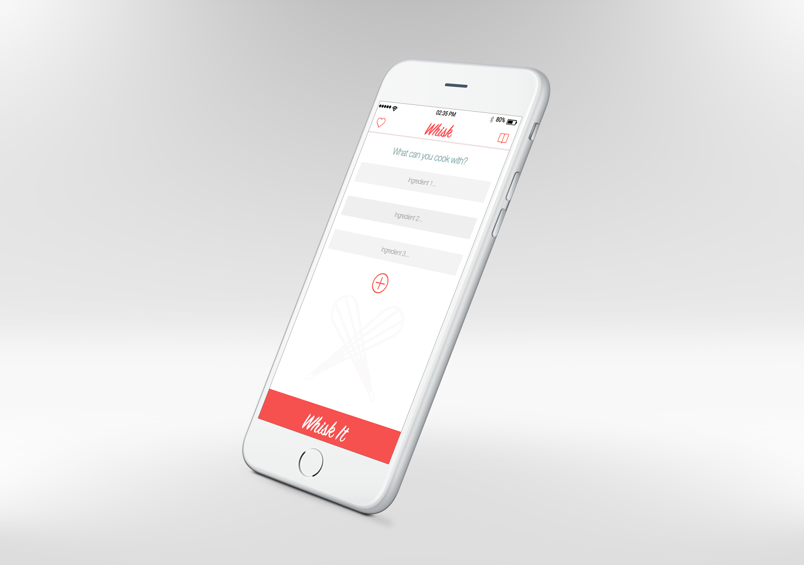
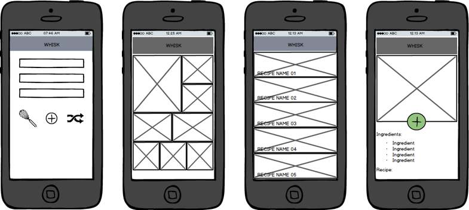
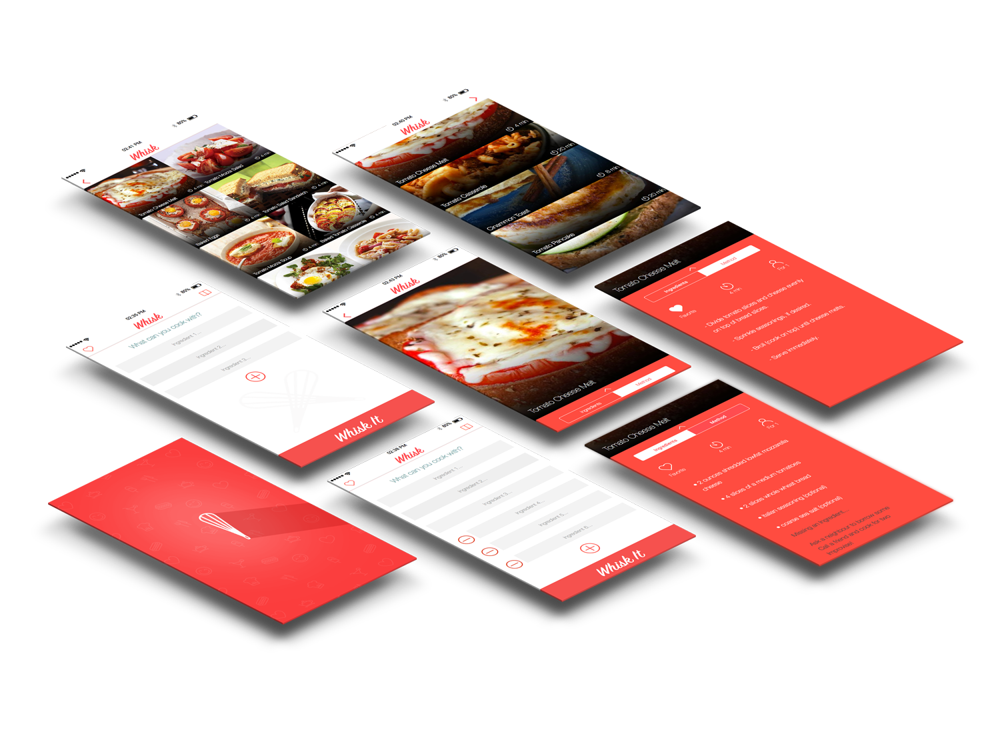

Product Manager / UX Designer
 An intuitive iOS app that gathers recipes based on your ingredients.Whisk is an interactive cooking app developed for those who are new to cooking or want to try something new. Whisk is ingredient focused so you can tell it what you have to work with and it will give you options. This is an assignment turned passion project that is a by-product of hungry students.
Wireframing
Brainstormed ideas and layouts with team members. Designed Wireframes using pen, paper, and Balsamiq.
Design

Took a poll of my peers and the majority agreed that Red and Green colors remind them of food. Chose color scheme, typeface, and designed app icon.
Designed layout using Adobe Photoshop and Illustrator. Worked closely with UX researchers to find high quality images and recipes.
Prototype
Developed interactive prototype using JustinMind and HTML. Presented and pitched app prototype to 100 students, 99 agreed that they would use Whisk day-to-day.